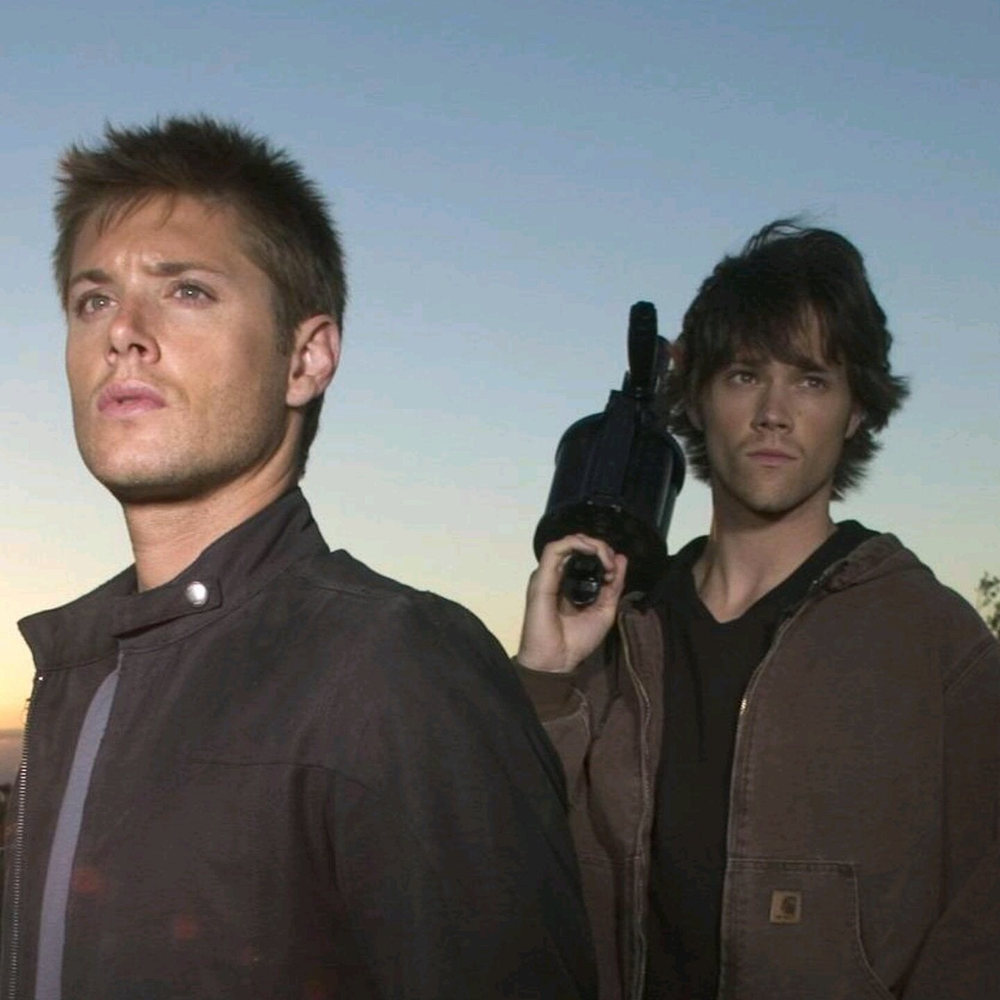

Temporada 1
A série segue os irmãos Sam e Dean Winchester enquanto procuram por seu pai, John, que está caçando o demônio que matou a mãe deles e a namorada de Sam. Durante suas viagens, eles usam o diário de seu pai para ajudá-los a continuar o negócio da família, salvar pessoas e caçar criaturas sobrenaturais.
As filmagens da série ocorrem em Vancouver, no estado da Colúmbia Britânica, no Canadá. Seu episódio piloto foi visto por mais de 5,69 milhões de telespectadores, e o índice de audiência dos quatro primeiros episódios levou ao canal The WB produzir uma primeira temporada completa de 22 episódios. Originalmente, Kripke planejou a série para três temporadas, mas posteriormente expandiu para cinco. A quinta temporada, que estreou em 10 de setembro de 2009, encerrou o enredo principal da série; no entanto, devido ao aumento da audiência da quarta e da quinta temporada, a The CW decidiu continuar a exibição de Supernatural. Em 31 de janeiro de 2019, a emissora The CW renovou a série para uma décima quinta e última temporada, contando com 20 episódios.